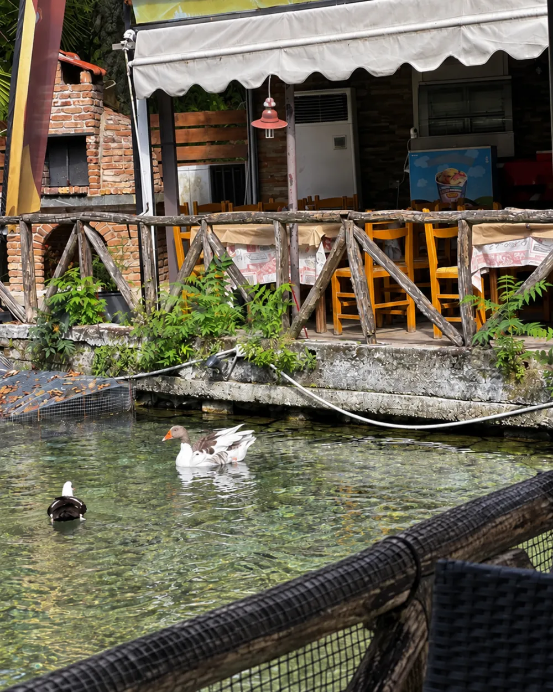
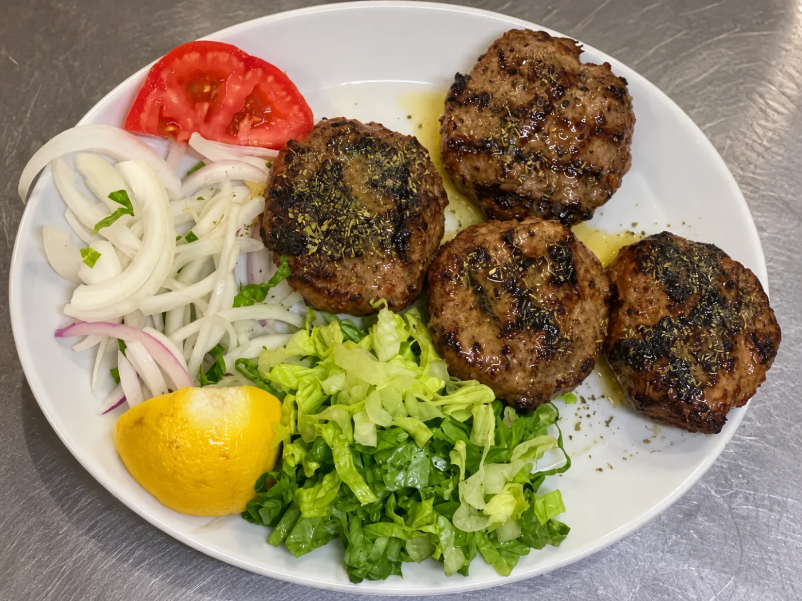

ΜΙΑ ΤΑΒΕΡΝΑ, ΕΝΑΣ ΤΟΠΟΣ.
Η ΛΙΜΝΗ
ΣΤΟΝ ΑΪ ΓΙΑΝΝΗ ΣΕΡΡΩΝ
Ένας τόπος που αρχίζει από το νερό.
Λίγα λεπτά από τις Σέρρες, η ταβέρνα Η Λίμνη κοιτάζει το ήσυχο νερό. Ξύλινα κάγκελα, πάπιες και σκιά από τα δέντρα γίνονται μέρος του τραπεζιού.
Εδώ δεν χρειάζεται βιασύνη. Μόνο μια καλή θέση δίπλα στο νερό.
Η φύση κάθεται μαζί μας.
Το νερό μένει κοντά σου — όχι σαν θέα στο βάθος, αλλά σαν ο ήχος και η κίνηση αυτού του μέρους.
Ο ΧΑΡΑΚΤΗΡΑΣ ΤΟΥ ΤΟΠΟΥ
Ξύλο. Σκιά. Ένα τραπέζι.
Η ταβέρνα έχει τον δικό της τρόπο να σε καλωσορίζει: απλά τραπέζια, το παλιό ξύλινο κάγκελο και το νερό ακριβώς δίπλα.


Δεν είναι σκηνικό. Είναι οι μικρές λεπτομέρειες που θυμάσαι όταν φύγεις.
ΤΟ ΝΕΡΟ · Η ΣΚΙΑ · Η ΠΑΡΕΑ
ΑΠΟ ΤΗΝ ΚΟΥΖΙΝΑ ΤΗΣ ΛΙΜΝΗΣ
Απλό φαγητό. Καλή παρέα.
Το πιάτο που βλέπεις είναι από την ίδια την ταβέρνα: κεφτεδάκια της σχάρας, με τα συνοδευτικά τους. Η φωτογραφία κρατά τον αληθινό χαρακτήρα της κουζίνας.

Μικρές εικόνες από έναν αληθινό τόπο.
Λίμνη, πάπιες, νερό, βεράντα. Οι λεπτομέρειες που κάνουν αυτόν τον τόπο ξεχωριστό.
05 / ΕΛΑ ΝΑ ΜΑΣ ΒΡΕΙΣ
Το τραπέζι είναι δίπλα στο νερό.
Η Λίμνη βρίσκεται στον Άι Γιάννη Σερρών. Έλα για το φαγητό, κάθισε για τη θέα και άφησε τη μέρα να πάει λίγο πιο αργά.
ΔΕΙΤΕ ΤΗΝ ΠΕΡΙΟΧΗ ΣΤΟΝ ΧΑΡΤΗ